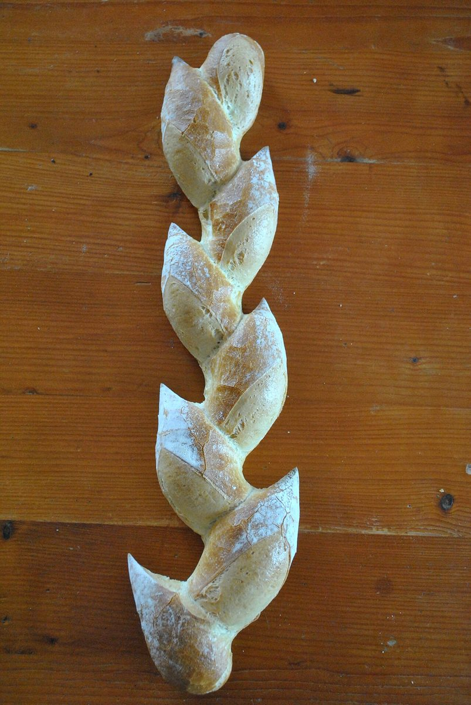
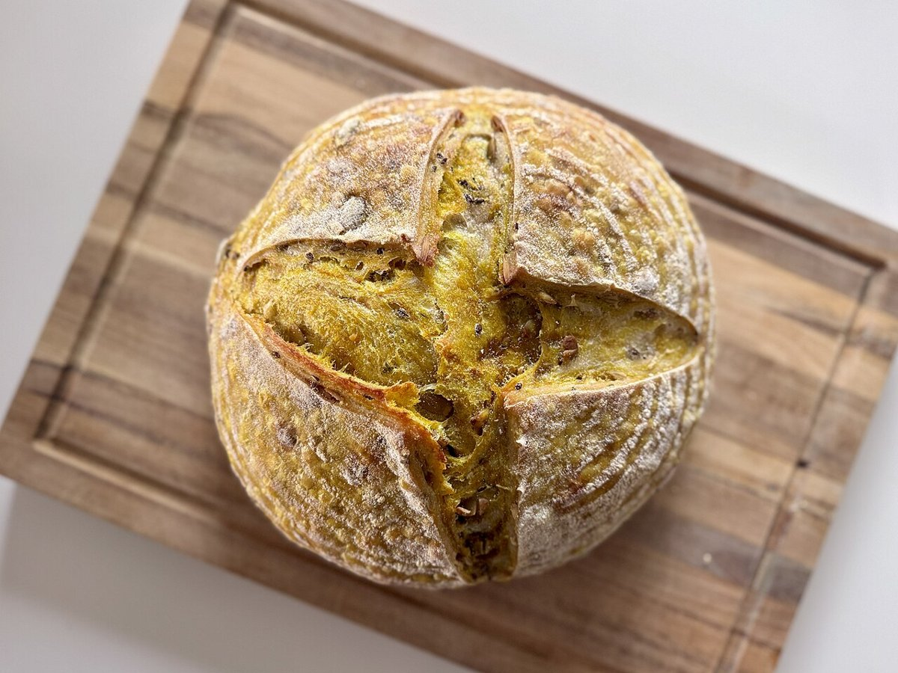
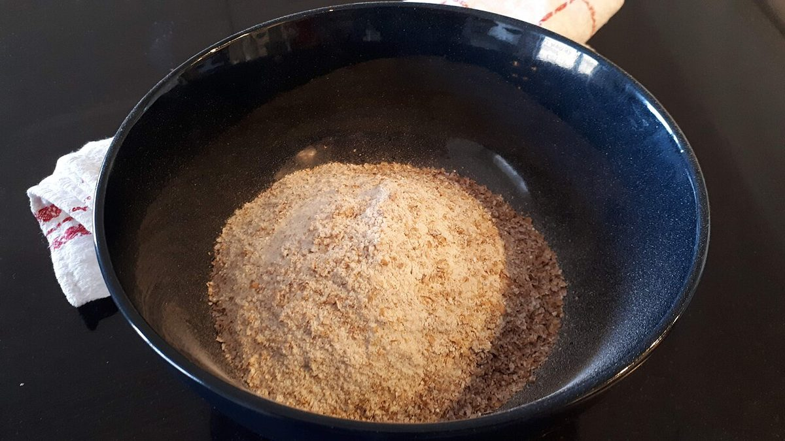
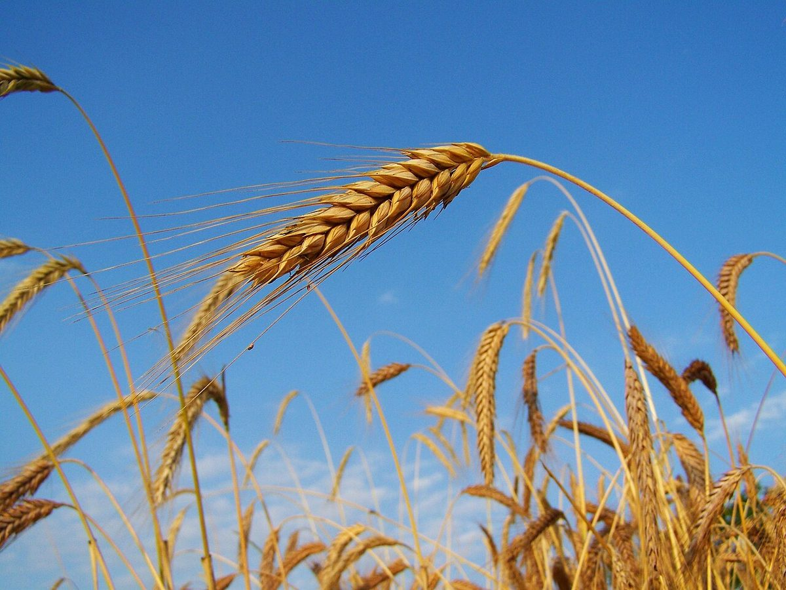

FUCHU-CHO, HIROSHIMA / OPEN 7:00
PANSECT
通勤の途中に、朝いちばんのハードな一本を。自家製酵母でじっくり焼く、府中町のベーカリーです。
Instagramを見るお店について
2024年1月、府中町にオープンしたベーカリーです。朝7時の開店は、オーナーさんの「通勤途中の人にも気軽に利用してほしい」という想いから。オーナーさんが好きなハード系のパンを中心に、自家製酵母でパン本来の香りと深みのある味わいを出しています。

パンが並ぶのは早い時間。昼過ぎには種類が少なくなることもあるそうなので、朝の来店がおすすめです。ご予約は前日までのInstagramのDM、または当日の店頭で受け付けているとのことです。支払いは現金・PayPayです(Instagram掲載情報)。
※店名の意味は確認できていないため、ここでは触れていません。
パンのこと
紹介記事などで見られる商品は、ナッツのバトン、ピスタチオのミルクフランス、ホットドッグ(スパイシーチリ)、バゲット、ベーコンエピなど。内容は日によって変わります。価格・営業時間・定休日の詳細は準備中です(実際の情報はInstagramをご確認ください)。







| 営業時間 | 準備中 |
|---|---|
| 定休日 | 準備中 |
| 電話 | 準備中 |
| 価格 | 準備中 |
口コミ
イメージ例以下は制作側が作成した例で、実在のお客様の声ではありません。
イメージ例
朝の出勤前に寄れるのがうれしいです。香ばしいバゲットを買って帰るのが楽しみになりました。
イメージ例
ナッツがたっぷり入ったパンは噛むほどに味が出ます。早めの時間に行くのがおすすめです。
イメージ例
前日にDMで取り置きをお願いできて助かりました。ハード系が好きな方にぴったりです。
アクセス
〒735-0006 広島県安芸郡府中町本町4丁目1-14
電話:準備中
Instagram:@pan_sect_